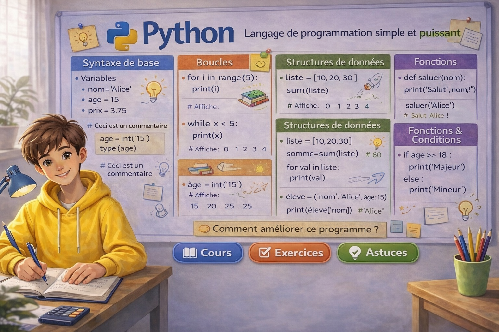

Bases de Python
Variables, instructions conditionnelles avec if, boucles for et fonctions en Python.
Maths Seconde • Chapitre Algorithme et programmation
Apprends à écrire des programmes simples en Python pour comprendre les bases du langage et les applications aux notions mathématiques de seconde.

Vue d’ensemble
Chaque carte ouvre une page complète avec cours, exercices, vidéo et astuce.
Variables, instructions conditionnelles avec if, boucles for et fonctions en Python.
Calculs numériques, équations, fonctions, statistiques, géométrie, probabilités et simulation.
Vidéos pédagogiques
Deux vidéos pour accompagner le cours et montrer comment utiliser Python en seconde.
Variables, affichage, conditions et boucles pour faire ses premiers pas.
Des exemples simples reliés au programme de seconde.
Exercices interactifs
Choisis un thème puis affiche une nouvelle série de 3 exercices tirés au hasard.
Sélectionne un thème puis clique sur le bouton pour afficher 3 questions.
Quiz automatique
Un nouveau quiz de 3 questions est généré aléatoirement à chaque fois. Choisis tes réponses puis clique sur corriger.
Score
Message rassurant
L’algorithmique peut sembler nouvelle en seconde, mais avec des exemples simples et proches du cours de maths, on comprend vite. L’objectif est d’avancer étape par étape.